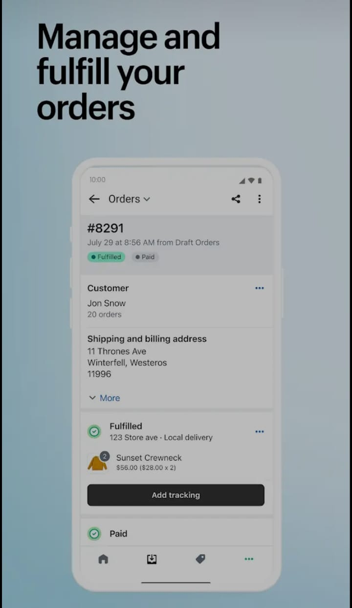

Shopify is a popular e-commerce platform that allows people to create and customize their own online store and store system, manage products, manage transactions and shopping methods. It is used for and people carry out various business through it so let us access its features and know what it does.
Shopify allows users to easily create a customized website with no coding skills required. You can use it by setting up your own chaser.Shopify provides various facilities to its customers in which you need to apply for your visa and various CNIC while creating your store and after that you must confirm your credit card within Shopify Can and allows to make other payments and international curnacy. offers shipping tokens for calculating prices and printing shipping labels within Shopify.Participate with different courses for fulfillment and offer shopping discounts to give different conveniences to the store. SEO helps improve in-store and marketing search engine effectiveness Social media visibility and marketing tools Support e-mails Expertise etc. Offers experiences and features to track store performance and customer behavior One Email One App Market Plus Features 10 Arifin Falit Accounts Customer Service Intervet and Management Shower Multiple Channels Promote Your Product Through Amazon Facebook and Googles and Sell Your Product Better Therefore, there is a dependency on various social media platforms and third parties are not allowed.
If you want to buy Shopify membership, first you have to buy your domain with one dollar and then you have to pay 25 dollars every month which includes different things on top of your website. Shopify charges you money to make and run it better
29 sep 2014
22 oct 2024/9.2442.1
Thinking of starting your own online store? Very cool! But don't worry—Shopify makes creating something special very easy. Whether you're installing furniture or just playing with ideas, here are some helpful tips to help you create a store from scratch.
There you may think of a name for your store. Choose what appeals to you. It doesn't have to be perfect or fancy. Just something that makes you smile and touches you. Imagine seeing that name on a business card!
Now comes the fun part! Think about what makes you feel welcome as a customer. Aim for a clean, accessible design that invites people from within.
This is where your store comes to life! Go to the "Products" section and start adding the products you want to sell. When writing a description, imagine you are having a conversation with a friend. How do you explain this? Keep it clear, honest, and light-hearted. People want to know why your product is unique. So let your personality shine!
Acquiring more customers doesn't have to be complicated or a sales pitch. In essence, it's about connecting with people. Understand what they want and show them that you truly care about helping. This is a simple method. It's user-focused to attract more customers without feeling like you're being pressured too much.
Think about who will benefit most from what you have to offer. Picture them: What do they care about? What are they struggling with? Knowing your ideal customer allows you to talk to them in a personal way. Be specific instead of guessing what they want—it makes it so much easier.
People are more likely to connect with you if they see your consistent online presence. Post content that addresses their needs or questions. But let's be true. Share ideas, your process, or even past success stories. Engage with others, express your opinions critically, and give honest advice. This shows that you're here to help, not just sell.
Networking doesn't have to be awkward or formal. Join a community or group where people who can use your services spend time. Talk to them as if you were having a friendly conversation. Share helpful tips or answer questions if you can. These little interactions add up and make you memorable without forcing you to do anything.
Offering a small freebie or a taste of your services can help potential customers experience what you can do. It may be a free consultation, quick instructions, or answers to a few questions. Showing value upfront without asking for anything in return builds trust and helps people see what you're about.
Here are some important tips to help you manage your Shopify store effectively:
Taking care of your products is important to avoid overselling or disappointing customers. Shopify has inventory management tools to help you monitor your stock levels and set up alerts for when products are running low. Make it a habit to check your inventory regularly so you can restock on time or update your inventory if it's out of stock.
Set up Shopify's automatic order processing options, such as automatic payment capture and fulfillment notifications, to help you manage your orders efficiently. Make sure orders are packed properly, labeled correctly, and delivered on time. Delays can negatively impact customer satisfaction, so create a daily order processing routine. Even if it only takes a few minutes each morning.
Answering customer questions quickly makes a big difference. Whether it's email, messages on social media, or comments on your website, answer questions in a friendly tone. If possible, enable live chat to provide immediate assistance. Happy customers are more likely to return and leave positive reviews. This helps your store grow.
Make your store look attractive and modern. Update product descriptions, images, and product listings regularly to keep your products current and attractive. Introduce new products or modify your collection to diversify and keep customers interested.